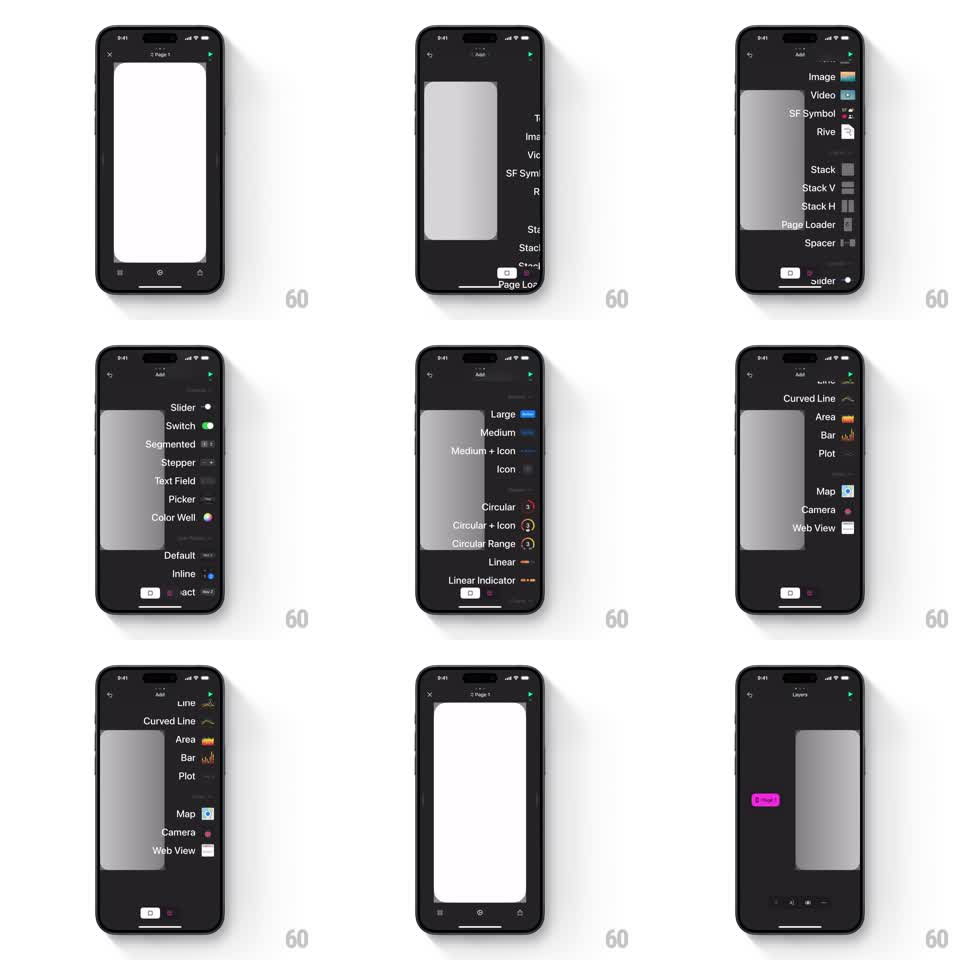

Media
Frame-by-frame

Rebuild this interaction 1:1: Play's edge-swipe panels - swiping from the right edge scales the canvas down and slides in the Add panel (element library) or Layers panel with a springy, tactile transition.

Rebuild this interaction 1:1: Play's edge-swipe panels - swiping from the right edge scales the canvas down and slides in the Add panel (element library) or Layers panel with a springy, tactile transition. ## Integration Integration: stack-agnostic spec - springs given as stiffness/damping, timed motions as duration + curve; map every value to your framework and animation library of choice. ## Scene The editor canvas (white page on a dark workspace). Right-edge swipe reveals a dark panel: the "Add" library listing elements with small icons (Text, Image, Video, SF Symbol, Rive, Stack, Stack V, Stack H, Page Loader, Spacer, Slider, Switch, Segmented, Stepper, Text Field, Picker, Color Well, Line, Curved Line, Area, Bar, Plot, Map, Camera, Web View). A second panel, "Layers", lists the page's layer tree. ## Motion spec Pattern: edge-swipe panel with canvas scale-down. - Drag from the right edge: the canvas scales down toward ~0.7 and shifts left 1:1 with the finger while the panel slides in from the right, coupled to the same gesture. - Release past ~35% travel: the panel commits - canvas and panel settle with a spring (stiffness ~300, damping ~26); below threshold everything springs back. - Panel rows stagger in from the right as it opens (30ms apart, 200ms). - Swiping the edge again (or a segmented toggle) swaps Add to Layers: panels crossfade-slide horizontally (250ms) without the canvas moving. - Close: drag the canvas right or tap it - panel slides out, canvas springs back to 1.0. ## Calibration - The gesture is coupled throughout - the canvas never jumps independently of the finger. - The spring settle should have a light, single overshoot; heavy bounce feels toy-like against a pro tool. ## Reduced motion Panels slide over a static canvas; no scale-down. ## Don't miss - The library list is long and scrollable - the panel, not the canvas, owns vertical scrolling while open. - The canvas stays interactive-preview crisp while scaled; do not blur it.